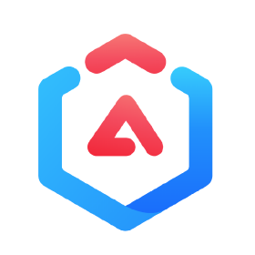

Sistemas de Diseño ¿qué es eso?
Jhony Grillet (a.k.a. @ch1nux)
(a.k.a. El Aguacate Programador)
Contenido del taller
- Discordia...
- vs. Librería de Componentes
- Leyes de UX
- Sistemas de Diseño existentes
- ...y memes!
- Demo XD
Discordia... ü§∑ü躂Äç‚ôÇÔ∏è
- Wikipedia: Conjunto de componentes que
definen requerimientos específicos para un sistema.
- Uxable.com: Activos reusables que definen interfaces.
- Design Handbook: Una balanza entre el control estricto y el caos que produce la libertad.
- Adobe Inc.: Define el lenguaje de marca, su signo y
su significado.
vs. Librería de Componentes


Leyes de UX
- Ley de Pareto: El 80% de los efectos provienen del 20% de las causas.
- Ley de Tesler: Para cualquier sistema existe una cierta cantidad de complejidad que no se puede reducir.
- Ley de Hick: El tiempo que lleva tomar una decisión aumenta con el número de alternativas y su complejidad.
- Ley de Prägnanz: Las personas interpretan las imágenes complejas como la forma más simple posible, porque es la interpretación que menos esfuerzo cognitivo requiere.
- Ley de Jakob: Los usuarios prefieren aquellos sitios que funcionen igual que los que ya conocen.
Definici√≥n "aguacat√≠stica" ü•ë
- Uniformidad: Consenso detallado y específico de funcionamiento
- Evolutivo: Cada proceso puede y debe ir cambiando para aportar valor, sin que eso afecte el proceso general (si existiera)
- Agnóstico: Independiente de la tecnología que lo soporte
- Significativo: Cada componente debe tener un valor en su conjunto y no
aislado del resto de componentes
- Minucioso: La especificidad es un aspecto crítico al definir un
sistema de diseño, respondiendo al qué, al cómo y al porqué
Sistemas de Diseño existentes
Demo XD
Manos a la ubre... üêÑ